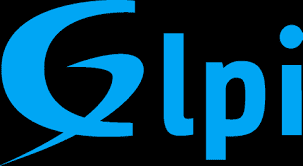

Sélection de réalisations
Mes Projets
Voici quelques projets qui illustrent ma progression en administration systèmes et réseaux, de la conception jusqu'au déploiement.
Réalisations en cours de formation
Mise en place de GLPI sur un serveur
Installation et configuration de GLPI (gestionnaire de parc) sur un serveur Debian : configuration Apache, base de données, plugins et sécurité.

Création, installation et configuration d'un domaine via Windows Server (2022)
Installation d’un domaine sur Windows serveur, (création d’utilisateurs dans Active Directory (Unités d’organisations, utilisateurs, groupes), création de dossiers partagé).


Réalisations en milieu professionnel
Mise en service de GLPI Mairie
Ouverture de GLPI à l'ensemble des agents, création des accès par service et structuration du suivi des incidents pour améliorer le support informatique.
